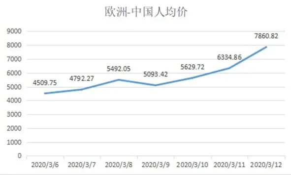

一张机票18万?欧洲华人深陷回国难题
原文链接 备份链接 记者：陈晓双 “ 金鹿航空推出了3月18日伦敦-日内瓦-上海航线的787公务机行程，共40个座位，单个座位售价18万元起，迅速卖光。 ” 随着境外疫情不断升级，越来越多的华人择返回国内。但由于各地管控措施升级和很多国际 …

来源：中国新闻网
境外疫情蔓延势头加剧，不少海外华人、留学生归国心切，回国的机票价格也接连创出高价。
近日，海航旗下的金鹿公务航空有限公司(以下简称“金鹿公务”)推出的伦敦飞上海航线，每张机票18万元起，却迅速售罄。一张机票凭什么卖出18万元的天价？

海报显示，该航班座位18万元起。

3月以来归国人数不断增加
3月以来，中国以外新冠肺炎确诊病例不断攀升。目前，中国以外共151个国家和地区出现确诊病例。截至欧洲中部时间16日10时(北京时间16日17时)，中国以外新冠肺炎确诊病例较前一日增加13874例，达到86434例；死亡病例较前一日增加848例，达到3388例。
受此影响，不少海外华侨和留学生考虑回国躲避疫情，这催生了大量市场需求。
“美国、意大利、西班牙、英国等国近期出现了一波归国潮。”携程数据显示，3月以来，预订自意大利、伊朗、西班牙、美国、瑞典回国的机票订单一直呈现增长态势。相较3月2日-3月8日，3月9日-3月15日上述5个国家出行人次增长近2倍。
如，比较3月15日与3月1日的机票价格和出行情况发现，3月15日的出行人次比3月1日增长了近5倍，平均价格增长了近1.5倍。
除了上述国家，携程称，日本、韩国、新加坡、新西兰、澳大利亚等多数国家的机票平均价格近期也出现了不同幅度的同比增长。

欧洲-中国的航班机票人均价格走势。(截至3月12日)
回国机票涨价，仍一票难求
市场需求不小，但航班供给却在减少。比如中美航线上的美国航司已经停飞所有美国到中国内地的直飞航线，国航和东航仅保留了从美国东海岸和西海岸到中国的各一班航班，这也使得欧美回国航班运力不足。
供需矛盾之下，乘客要从欧美飞往中国需要付出的成本显著提高。据去哪儿网数据显示，在过去的一周，美国各地返回国内的机票均价上涨47.6%，欧洲各地返回国内的机票价格上涨74.3%。
记者16日查询在线票务平台发现，3月份伦敦-上海的机票价格在4000-24000元之间，明显高于往常。未来的机票价格如何？3月16日到3月22日机票价格均超过20000元，且仅有一个班次可选，而3月31日这天有大约50个航班可供选择，最低价格为4318元，但最高的公务舱价格近5万元。

数据来自美团。
不仅如此，据去哪儿网平台数据显示，在未来的一周内，欧美主要城市飞往北京、上海的直飞航班已经售罄。具体来说，伦敦返回国内的航班最难买，除香港外，伦敦至北京、上海、广州、成都直飞航线基本售罄，3月18日，由伦敦至香港的直飞航班含税最低52313元。
180000元一张的机票，照样火速售罄
买不到普通民航机票，包机成为一种价格高昂的选择。近日，一张由波音787公务机执飞的伦敦飞往上海的海报传遍朋友圈。海报信息显示，这趟航班每个座位售价18万元起，仅有40个座位。
这班公务机在放票后不久即售罄。运营商金鹿公务表示，这架公务机收到了100多个预定需求，主要来自伦敦。
公开资料显示，金鹿公务是海航集团旗下航空公司，是国内从事专业公务机租赁、私人飞机托管、公务机地面代理和维护、空中医疗救援以及私人飞机购买咨询等服务的运营商。
金鹿公务介绍，“787梦想商务机最高可容纳40人出行，内部配备了客厅、客舱、主卧、主卧衣帽间、主卧盥洗室和厨房。”“专门制定七星级的服务标准，提供一对一‘旅行管家’服务”。

波音787公务机内景。图片来自金鹿公务官网
据专家介绍，公务机是包机的一种形式，根据包机人需求订制飞行，其价格明显高于普通民航客机。
民航专家綦琦告诉记者：“以金鹿航空伦敦飞上海使用的787飞机为例，普通航班的头等舱+公务舱+经济舱布局提供250个座位，而公务机布局仅40个座位，所以会用头等舱或更高价格进行定价。同时包机是单向运行，还涉及到调机费等，所以价格会比一般民航客机的价格高。”
金鹿公务总经理运启骥在接受媒体采访时表示，春节期间，金鹿公务的生产并未中断，由于公务机行业的特殊性，航班数量反而有所增加。有一些客户原来是搭乘大航班头等舱出行，现在因为公务机的私密性与灵活性强，转而选择公务机包机飞行。这部分新增业务给航班减少带来了一些弥补。
据私人飞机平台iFlyPlus数据分析，3月初，受亚洲、欧洲、北美等地疫情发展的影响，生活在海外的企业家及移民、留学生等咨询客户越来越多来电询问包机事宜，他们正在时刻观察疫情走势，考虑择日回到疫情得到逐步控制的中国。1-3月，其平台境外注册用户在全部用户占比从将从过去的11%增到19%。
国际航班逐步复苏
受疫情影响，2月份中国民航业亏损创历史记录。民航局为帮助企业渡过难关，出台了一系列税费减免优惠，还推出了更直接的奖励政策。
3月4日，民航局宣布对疫情期间不停航和复航的国际航班给予奖励。奖励标准分成两档：共飞航班每座公里0.0176元，独飞航班每座公里0.0528元，政策执行期限为2020年1月23日至2020年6月30日。
在奖励政策和市场需求的推动下，航空公司正在逐渐恢复部分国际航线。南航计划逐步恢复广州至澳新、北美、欧洲、东南亚等多个地区的国际客运航班，其中欧洲航线方面，从3月22日起，南航计划将广州至伦敦航线恢复至每周4班，每周1、3、5、7执行。
东航方面从3月15日起恢复了多条国际航线。其中欧洲航线上恢复了浦东-巴黎、浦东-阿姆斯特丹、浦东-法兰克福、浦东-伦敦等航线。
国际航班多，北京、上海严防疫情境外输入
目前入境国际航班仍然较分散，防范疫情境外输入的压力仍然较大。
飞常准数据显示，3月14日国内承接疫区航班的机场数量达到10个，其中首都机场疫区航班量最多，达到8个；上海两机场以5个疫区航班量位居第二。此外，广州白云、哈尔滨太平、延吉朝阳川以日均2个疫区航班量排名第三。

数据来自飞常准。
国航海外疫情防控组成员张允15日介绍称，3月1日至3月15日滚动统计，国航“境外进京”航班在登机前因体温超标暂不运输旅客76人，涉及23个航班；国航机组执行境外进京航班，飞行途中检测体温超标落地移交检疫67人(涉及44个航班)。
为有效防范境外疫情的输入和扩散，北京15日起，首都机场全部国际及港澳台地区进港航班，均停靠首都机场T3D处置专区。从3月16日零时起，所有境外进京人员，均应转送至集中观察点进行14天的隔离观察。有特殊情况的，经严格评估，可进行居家观察。集中隔离观察期间，隔离人员费用需要自理。
上海则要求，3月13日零点起，凡是在进入上海之日前14天内，有过韩国、意大利、伊朗、日本、法国、西班牙、德国、美国等国家旅行或居住史的所有中外人员，一律实施居家或集中隔离健康观察。
“随着类似北京的对入境人士的隔离措施实施，回国需求应该会有所下降。毕竟，控制疫情蔓延的最好办法是就地自我隔离，而不是各种流动。”綦琦表示。


推荐阅读

点击大图 |美联储开闸大放水 “经济新冠肺炎”惊跑全球资本

点击大图 | 美联储的王炸加剧恐慌，只有疫苗才能拯救全球金融市场****

原文链接 备份链接 记者：陈晓双 “ 金鹿航空推出了3月18日伦敦-日内瓦-上海航线的787公务机行程，共40个座位，单个座位售价18万元起，迅速卖光。 ” 随着境外疫情不断升级，越来越多的华人择返回国内。但由于各地管控措施升级和很多国际 …
原文链接 备份链接 *************▲*************疫情期间，人们不能移动，机票取消，使得国内航空公司不得不合并、取消多数航班。图为广州白云国际机场航站楼候机厅一角。（南方周末记者 冯飞/图） 全文共4406字，阅 …
原文链接 备份链接 北京时间1月31日，世界卫生组织宣布新冠肺炎是突发公共卫生事件后，中国出入境的国际航班大规模削减。根据去哪儿网的数据显示：1月30日被取消和限制销售的出入境航班数量占比达到了17%，1月31日取消出入境航班超 …
原文链接 备份链接 曾经被人羡慕着可以搭乘撤侨飞机回到安全地的加拿大人，怎么也不会想到，有一天，我们也要经历停课、所有公共场所强制关闭、抢购、缺货的生活。 文 | 艾琳 一个月前，谁都没有想到，我们这也会经历这样的乱世。 3月12日，我 …
原文链接 备份链接 欧洲疫情不断扩散，英国确诊病例迅速增加，由于部分航班取消，在英留学生想马上回国并不容易 文丨《财经》记者 陈亮 王静仪 编辑丨施智梁 英国疫情蔓延近日明显加速。截至3月15日，英国新冠肺炎确诊病例数已达1372例，与前 …